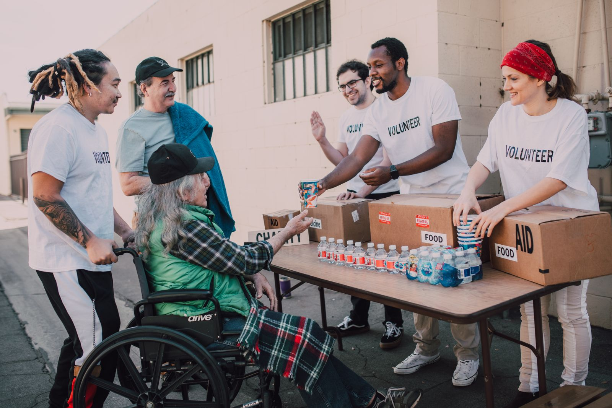
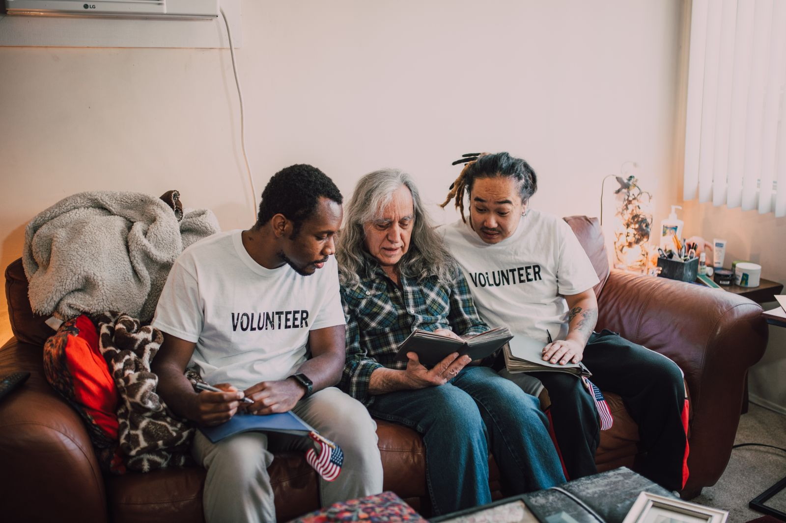
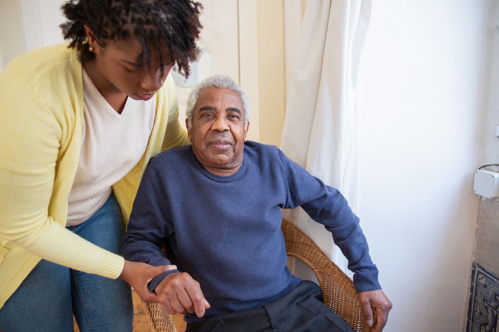

operações de e-commerce acompanhadas
PORTFÓLIO PROFISSIONAL • 2026LUIZ ALVES ↔ BLUMENAU, SC
01PESSOAS
Escuta que entende
o contexto.
Três formações. Uma trajetória conectada por comunicação, desenvolvimento humano e resultados.
16ANOS DE
EXPERIÊNCIA
EXPERIÊNCIA
00
PERFIL
MULTIDISCIPLINAR
SOBRE LUIZ FELIPE RAHN
Competências diferentes.
O mesmo centro: pessoas.
Uma carreira desenvolvida na interseção entre proteção social, relacionamento estratégico e educação. O repertório muda; a capacidade de ler contextos, comunicar com clareza e construir caminhos permanece.
São mais de 16 anos combinando experiência técnica, liderança, ensino, relacionamento e marketing internacional — com uma visão ampla e profundamente humana.
níveis de Inglês ensinados
marcas articuladas internacionalmente
ESCOLHA UMA JORNADA
02
ATUAÇÃO PROFISSIONAL
ANALISTA DE CUSTOMER SUCCESS
Customer Success
Relacionamento estratégico orientado por dados e resultados.
Gestão consultiva de uma carteira com mais de 40 operações de e-commerce, transformando sinais de risco, desempenho e contexto em próximos passos claros para retenção e crescimento.
01Health Score02Churn & NRR03E-commerce04Dashboards05Jornadas de sucesso
03
FORMAÇÃO EM ANDAMENTO
LICENCIATURA EM INGLÊS • EM ANDAMENTO
Educação & Idiomas
Aprendizagem que amplia autonomia, repertório e presença.

Mais de nove anos entre sala de aula, coordenação pedagógica e formação de instrutores, com Inglês A1–C1, Alemão, metodologia Cambridge e planos centrados em objetivos reais.
01Inglês A1–C102Alemão03Cambridge04Conversação05Formação docente
04
TRAJETÓRIA
EM CAMADAS
EXPERIÊNCIAS QUE SE COMPLETAM
Não são três carreiras.
É uma visão mais ampla.
Customer Success
Gestão de carteira, estratégia, retenção e performance em e-commerce.
Educação & Idiomas
Docência, coordenação pedagógica, Cambridge e formação de instrutores.
Serviço Social
CRAS, CREAS, ILPI, gestão municipal e Proteção Social Especial.
Marketing
Relacionamento B2B e articulação com 18 marcas parceiras.
ESCUTA✦ESTRATÉGIA✦EDUCAÇÃO✦RESULTADOS✦ESCUTA✦
“Compreender o contexto é o primeiro passo para transformar qualquer jornada.”
05
PRÓXIMO
PASSO
VAMOS CONVERSAR?
FORMAÇÃO CONCLUÍDA
BACHARELADO EM SERVIÇO SOCIAL
Serviço Social
Proteção social, acesso a direitos e desenvolvimento humano.



Uma prática construída em CRAS, CREAS, ILPI, gestão pública e Proteção Social Especial — unindo escuta qualificada, diagnóstico social e articulação de rede.